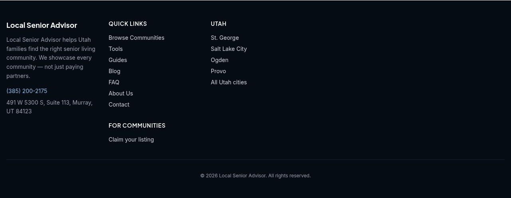

Review preview with sample data, not live. Draft pull request 478.
NEW means changed in this PR. CURRENT STATE means existing, unchanged.
Randy's ask: a Claim your listing link in the footer of the community page
This is the one change that covers the ask. The footer on every community page now has For Communities, then Claim your listing, which opens the existing owner signup.

Open the community page copy (Desert Willow Assisted Living, St. George) and scroll to the footer. Phone view
Good to know: the link opens the general owner signup and does not carry which community the visitor was on. The community page already has its own Claim this listing link in the sidebar, which goes to the existing claim page for that community.
Optional extras, keep or cut
Everything below rides along in the same PR. Each can stay or go without affecting the footer link.
- Signup page intro wording (step 2)
- Check your email wording (step 3)
- Confirm link signs in and opens the claim (step 4)
- Account overview button opens the claim search (step 5)
- Claim form opens with the community picked (step 6)
- Claim received wording and email (step 7)
- Approval email with one Edit your listing button (step 9)
- Welcome note in the editor after approval (step 10)
- Clearer in review banner, save message and field labels (step 11)
The full owner flow, in order
Walked end to end on a local copy of the site and Strapi with sample data. The admin approval step is the existing Strapi screen.
- Step 1: Community page footer: Claim your listing NEW
Changed in this PR: the site footer gets a For Communities heading with a Claim your listing link, and it shows on every page that uses the main layout, including each community page. - Step 2: Owner signup page NEW
Changed in this PR: the existing owner signup page only gets small edits; it looks the same. - Step 3: Check your email NEW
Changed in this PR: the existing confirmation screen gets new wording. - Step 4: Confirm email, signed in NEW
Changed in this PR: today an owner who confirms sees Email confirmed with a Log In button; now the link signs them in and opens the claim. - Step 5: Account overview NEW
Changed in this PR: the screen looks the same; only where one button goes changed. - Step 6: Claim form with the community picked NEW
Changed in this PR: the existing claim form opens on its own with the community already picked when signup carried one. - Step 7: Claim received NEW
Changed in this PR: the existing Claim in review row gets clearer wording. - Step 8: Admin approval in Strapi: Account Moderation, Claims tab CURRENT STATE
Existing, unchanged. The admin screen, the Mark contacted, Approve and Reject controls, and the required verification note all work as they do today. - Step 9: Approval email NEW
Changed in this PR: the existing approval email now has one Edit your listing button that opens the editor. - Step 10: Editor with the welcome note NEW
Changed in this PR: the existing editor shows a one time welcome note after approval. - Step 11: An edit in review NEW
Changed in this PR: the existing Changes waiting for review banner and save message stay, with clearer copy and small labels.